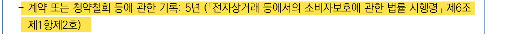
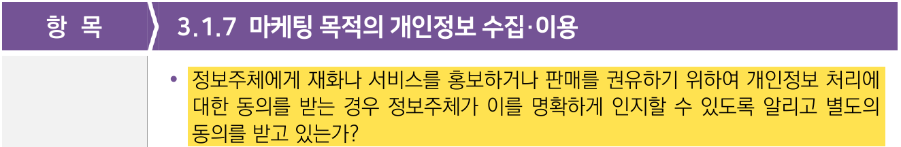
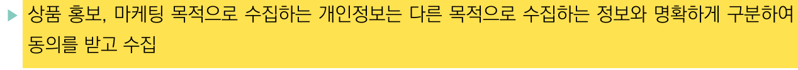

2026 현장형 AX 전문강사 데모데이 · 김현래
법률 전문가가 아닌 담당자가
AI로 개인정보 처리방침을 점검한다면?
업무 정리에서 AI 활용까지 (과정명 가제) · 재직자 대상
AX 강사과정 과제: 7·14·21시간 과정을 이렇게 설계했습니다
1단계 · 정리DX · 흩어진 자료에 공통 기준
2단계 · 흐름 끝까지가로 · 접수 → 확인 → 안내
3단계 · 보고까지세로 · 업무 기록 → 보고 → 결재
어느 길이든 세 단계를 모두 거칩니다 · 한 칸 = 100분 교시 · 한 회 = 4교시 · 시간이 늘면 단계가 깊어집니다 · ★ 오늘 시연
오늘 시연 ·
2단계 첫 교시 "기준을 주고 점검 맡기기"이 교시를 마치면 공식 자료로 점검표 초안을 만들고, AI 결과를 근거 쪽수로 확인하고, 고칠 것과 물을 것을 나눌 수 있다
설계 과정
이 과정은 해 보고, 고치며 만들었습니다
2회블라인드 교차 검토
외부 AI가 구성안을 채점
→ 목표를 먼저 제시하고, AI 시연을 넣음
5회 이상조건마다 재현 시험
같은 요청을 반복해 돌림
→ 매번 같은 결과인지 확인한 것만 씀
3곳외부 AI 검수
흐름과 표현을 점검
→ 어색한 연결과 어려운 말을 고침
상세 시험 기록과 AI 원본 응답은 따로 준비했습니다 (r 키)
제가 홈페이지를 운영할 때
개인정보 처리방침 법무 검토는 매월, 미리 신청했습니다
● 정기 점검: 바뀐 부분 위주로 요청
1월
2월
3월
4월
5월
6월
그래도 법령 개정 · 인증 심사 · 신규 서비스 오픈처럼
갑자기 점검할 일이 생깁니다.
오늘의 질문
법률 전문가가 아닌 담당자는,
갑자기 생긴 처리방침 점검을
어떻게 해야 할까요?
오늘의 회사 (가상) · 2단계 첫 교시 실습 자료
(주)다정밥상은 다음 달 1일 온라인몰을 엽니다.
법률을 아는 사람은 없습니다
회사반찬 정기배송
가입 화면·처리방침다른 쇼핑몰 것을 참고해 외주 제작
온라인몰 담당1명 · 법률은 모름
오늘
오픈다음 달 1일
전문가 검토 가능2주 뒤 · 사내 법무 없음
실습용 가상 회사입니다.
개인정보 처리방침
개인정보 처리방침은 법이 정한 항목에 따라
작성하고 공개해야 하는 문서입니다
처리 목적왜 받는지
처리하는 개인정보 항목무엇을 받는지
처리 및 보유 기간언제까지 갖고 있는지
처리 위탁어느 외부 업체에 맡기는지
개인정보 보호책임자문의는 누구에게, 어떻게
…그 밖에 법이 정한 항목
개인정보 보호법 제30조 · 개인정보보호위원회 「개인정보 처리방침 작성지침」(2026.4)
오늘 점검할 두 화면
회원가입 화면과 처리방침에 고쳐야 할 곳 여섯 곳을 심어 두었습니다
 회원가입 화면 (아래쪽)
회원가입 화면 (아래쪽) 개인정보 처리방침 (일부)
개인정보 처리방침 (일부)
실습용 가상 서비스 화면 · 전체: 2026-11_demoday_v4/demo/signup.html, privacy.html
대조
두 문서를 비교하면, 세 곳은 눈으로도 보입니다
회원가입 화면
처리방침
생년월일
→
2. 항목에 없음
못 드시는 재료
→
2. 항목에 없음
알림톡 (주)메시지온 · 배송 (주)빠른새벽택배
→
5. 위탁에 없음
나머지 세 곳은 법을 알아야 보입니다. AI는 어디까지 찾을까요?
시연 1 · 발표 전에 실행한 결과를 재현한 화면
AI에게 기준 없이, 두 문서만 주고 점검을 맡겼습니다
회원가입 화면과 개인정보 처리방침을 대조해서, 맞지 않거나 확인이 필요한 점을 찾아 주세요.
AI
생년월일 수집 목적이 처리방침에 없음 제15조생년월일
생년월일이 처리방침 항목에 없음 제30조생년월일
알림톡 발송 대행사가 위탁 항목에 없음 제26조위탁 업체
배송 대행사가 처리방침에 없음 제26조위탁 업체
못 드시는 재료가 처리방침 항목에 없음 제30조재료
추천인 적립금과 제3자 제공 관계 확인 필요추가 질문
보유 기간이 "회원 탈퇴 시"로만 적혀 있음 제39조보관 기간 절반
혜택 알림을 문자·이메일·앱 푸시별로 나눠야 하는지 제15조추가 질문
시연 1 결과
두 문서를 비교해서 알 수 있는 세 곳만 찾았습니다
같은 요청 다섯 번
→ 다섯 번 모두, 법을 알아야 보이는 세 곳은 찾지 못함
실습용으로 심어 둔 여섯 곳 기준 · △ 절반만 찾음 (예: "보유 기간이 모호하다"고만 하고 법정 보관 기록·기간은 없음) · 발표 전 재현 시험 기록
AI는 무엇과 무엇을 비교했나
두 문서는 서로 비교했지만,
법이 요구하는 기준과는 비교하지 않았습니다
회원가입 화면AI에게 줌
처리방침AI에게 줌
비교함 → 세 곳 찾음
법이 요구하는 것기준으로 주지 않음 · AI가 아는 만큼만 적용
비교 안 함
비교 안 함
AI 결과에서 조심할 것
환각은 틀린 것, 누락은 빠진 것
환각
없는 것을 있는 것처럼 말합니다.
시연 1의 7번 "보유 기간 근거: 제39조"
→ 제39조는 손해배상 조항
답에 적혀 있으니, 조문을 찾아보면 틀린 걸 알 수 있습니다.
누락
있어야 할 것을 말하지 않습니다.
→ 처리방침에 보호책임자 연락처가 없는데,
AI 답에는 그 지적이 없음
답에 나타나지 않으니, 빠진 줄 알기 어렵습니다.
누락을 막으려면, AI에게 점검 기준을 줘야 합니다.
점검 기준 = 점검표 · ISMS-P 심사원 시험을 준비하며 익힌 방법
법을 몰라도, 공공기관이 공개한 안내서로
점검표 초안은 만들 수 있습니다

1점검 범위를 정한다
처리방침 문서 + 가입 화면의 동의
2범위에 맞는 공식 자료를 구한다
다른 서비스의 처리방침이 아니라 · 개인정보위 「처리방침 작성지침」, KISA 「인증기준 안내서」
3AI로 점검표 초안을 받는다
항목마다 근거 쪽수를 달게 한다
4원문을 펴서 확인하고 더한다
AI가 흐리게 적거나 빠뜨린 것을 원문에서 되살린다
5해석이 필요한 부분은 전문가에게
점검표는 초안, 법적 판단은 전문가 검토로
개인정보보호위원회 「개인정보 처리방침 작성지침」(2026.4) 표지 · 공공누리
보관 기간 · 「작성지침」 = 개인정보보호위원회가 낸 처리방침 작성 안내서
AI 초안이 가리킨 31쪽을 펴 보니,
보관 기간 한 줄이 더 필요했습니다
① AI 초안의 한 줄"보유 기간이 구체적으로 적혀 있는가"
근거: 작성지침 31쪽
② 31쪽을 펴 보니다른 법이 보관 기간을 정하고 있으면, 그 근거와 기간도 적어야 합니다
예: 전자상거래법 · 계약 기록 5년
③ 다정밥상에 대 보니처리방침엔 "탈퇴 시 지체 없이 파기"뿐.
온라인 판매는 주문·계약 기록 5년 보관
④ 점검표 한 줄을 고침"탈퇴 후에도 법령에 따라 보관해야 하는 기록과 기간을 적었는가"
원문 · 개인정보보호위원회 「개인정보 처리방침 작성지침」(2026.4) 31쪽 · 형광펜은 발표자


마케팅 동의 · 「인증기준 안내서」 = KISA가 낸 개인정보 관리체계(ISMS-P) 인증 기준 안내서
AI 초안에 없던 가입 화면의 동의는,
인증기준 안내서에서 한 줄을 더했습니다
① AI 초안 10줄처리방침 항목 위주.
가입 화면의 동의 방식을 묻는 줄은 없음
② 3.1.7을 펴 보니마케팅 목적의 동의는 다른 동의와 구분해 따로 받아야 합니다
③ 다정밥상에 대 보니가입 화면의 혜택 알림 수신 동의가 [필수] 개인정보 동의에 묶여 있음
④ 점검표에 한 줄을 더함"홍보·혜택 알림 같은 마케팅 동의를 다른 동의와 구분해 따로 받는가"
원문 · KISA 「정보보호 및 개인정보보호 관리체계 인증기준 안내서」(2023.11) 208쪽 · 형광펜은 발표자


시연 2 준비 · 우리 회사 점검표
AI가 만든 10줄에, 원문을 확인한 2줄을 더해
점검표를 만들었습니다
수집하는 항목
처리 목적
보유 기간+ 탈퇴 후 법령에 따라 보관하는 기록과 기간
위탁 업체
파기 방법
보호책임자 연락처
열람·정정 요청 방법
안전 조치
찾기 쉬운 곳에 있는가
변경 공지
+ 마케팅 동의를 다른 동의와 구분해 따로 받는가
AI가 작성지침으로 만든 초안 10줄 (그대로)사람이 원문을 펴 보고 더한 2줄
시연 2 결과 · 같은 AI · 같은 자료 · 같은 날 · 조건마다 5회
점검표에 넣은 만큼 찾았습니다
점검표에 있는 만큼 찾고, 없는 것은 못 찾습니다.
Claude Haiku 4 · 2026-11-19 · 실습용으로 심어 둔 여섯 곳 기준 · △ 절반만 찾음 · 심어 둔 곳 외의 추가 질문은 조건마다 평균 3~4개 · 기록은 r 키
AI의 결과는 판단이 아니라, 판단을 받기 위한 준비
적혀 있는 것은 오픈 전에 고치고,
판단이 필요한 것은 전문가에게 묻습니다
오픈 전 고친다 법령·지침에 적혀 있는 것 · 사실 확인 후 · 담당자
처리방침 항목에 생년월일·못 드시는 재료 추가
위탁에 (주)메시지온·(주)빠른새벽택배 추가
보호책임자 연락처(전화·이메일) 추가
혜택 알림 수신 동의를 [선택]으로 분리
탈퇴 후 법령상 보관 기록과 기간 기재
전문가에게 묻는다 우리 상황에 대입하는 판단 · 2주 뒤 검토
못 드시는 재료(알레르기)는 별도 동의가 필요한 민감정보인가요?
배송사에 주소를 넘기는 것은 위탁인가요, 제3자 제공인가요? AI가 짚음
추천인 적립금을 줄 때 제3자 제공이 생기나요? AI가 짚음
다정밥상은 다섯 곳을 오픈 전에 고치고, 세 질문은 2주 뒤 검토에 가져갑니다.
중요한 답이 늦으면 오픈 시점을 다시 정합니다 · 최종 판단은 전문가와 대표
정리
AI에게 일을 맡길 때도,
사람에게 맡길 때처럼 세 가지가 필요합니다
1기준을 줍니다
2기준대로 했는지 봅니다
3결과가 맞는지 판단합니다
같은 방식으로 · 견적서 ↔ 주문서 · 주문표 ↔ 재고표 · 보고서 숫자 ↔ 원자료 (2단계 실습)
AI가 제대로 일하도록 기준을 만드는 것도, 사람의 역량입니다.
마지막으로 하나 더 점검
내가 AI의 방향을 잡고 있나요,
AI에게 끌려가고 있나요?